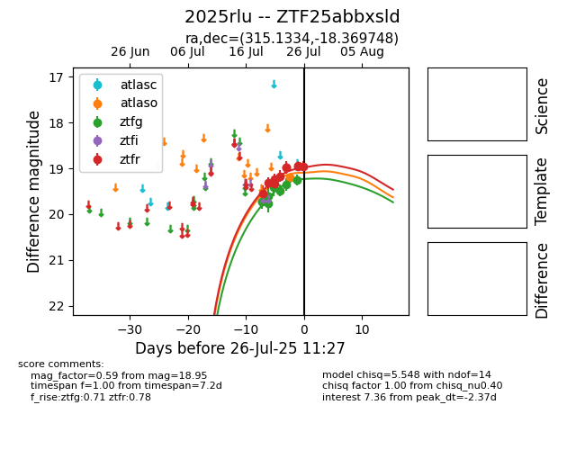

Target 2025rlu at 2025-07-26 11:27, see:
FINK: fink-portal.org/2025rlu
Lasair: lasair-ztf.lsst.ac.uk/objects/2025rlu
ALeRCE: alerce.online/object/2025rlu
TNS: wis-tns.org/object/2025rlu
YSE: ziggy.ucolick.org/yse/transient_detail/2025rlu
alt names
ZTF25abbxsld (ztf,fink)
2025rlu (tns,yse)
coordinates:
equatorial (ra, dec) = (315.1334,-18.36975)
galactic (l, b) = (29.4087,-36.49206)
photometry
last atlaso=19.20, ztfg=19.25, ztfr=18.95
1 atlaso, 8 ztfg, 10 ztfr detections
